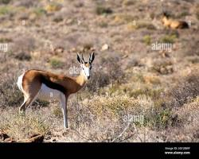

The springbok (Antidorcas marsupialis) is a medium-sized gazelle-like antelope endemic to the dry inland plateaus of Southern Africa (Skotnes, 2007). Known for its striking reddish-brown and white coat with a dark lateral stripe, the animal is biologically distinct for its fold of skin along the back. When startled or displaying, the springbok opens this pocket to fan out a crest of dazzling white hair while performing high vertical leaps up to 2 meters (6.5 feet)—a unique behavioral trait known as pronking (Gordon, 1992:45).
Long before European settlement gave rise to the Afrikaans name springbok ("jump antelope"), the animal held an ancient presence across the Karoo and Kalahari regions. To the indigenous Khoekhoe, the animal was named ||gâub, while various |Xam San groups knew it as !gā (Bleek & Lloyd, 1911:204). The species evolved naturally within these arid environments and served as a crucial ecological link across pre-colonial Southern African grasslands.
Within indigenous Khoisan belief systems, the springbok was far more than prey; it was deeply interwoven with spirituality and creation narratives. In the 19th-century |Xam narratives recorded by Wilhelm Bleek and Lucy Lloyd, the springbok is featured as a favored creation of the trickster-deity ||Kagg'n (the Mantis) (Bleek & Lloyd, 1911; Skotnes, 2007:112). Folklore recorded from informants such as ||Kbo-ko-an described how ||Kagg'n protected springbok herds from hunters by warning them of danger, establishing a sacred relationship between hunter, deity, and animal.
For millennia, San hunter-gatherers and pastoral Khoekhoe communities depended on the vast migratory herds (trekbokke) for survival (Gordon, 1992). Beyond providing lean meat, every part of the animal was utilized: hides were processed into soft garments, quivers, and shelter wraps; bones were shaped into fine needles and arrow points; and sinew was crafted into bowstrings and binding thread (Skotnes, 2007).
In modern South Africa, the springbok holds prominent status as both a national symbol and a everyday cultural staple across multiple domains:
| DC Title | The Springbok (Antidorcas marsupialis): Khoisan Folklore, Biological Profile, and National Emblem (Bleek & Lloyd, 1911; Skotnes, 2007) |
|---|---|
| DC Creator | Bleek, W.H.I. & Lloyd, L.C. (Archival Record) / Digitized by UCT Libraries Special Collections (University of Cape Town Libraries, 2022) |
| DC Date | 1870–1884 (Archival Context) / 2026 (Cataloged) |
| DC Type | Text / Fauna Profile & Folklore Manuscript (DCMI, 2020) |
| DC Subject | Springbok; Antidorcas marsupialis; Khoisan Cosmology; ||Kagg'n; |Xam Folklore; Pronking; South African National Animal (Gordon, 1992; Skotnes, 2007) |
| DC Source | University of Cape Town Libraries Special Collections, Bleek & Lloyd Collection (BC 151) (University of Cape Town Libraries, 2022) |
| DC Publisher | University of Cape Town / Department of Knowledge & Information Stewardship (Yiba, 2026) |
| DC Rights | Public Educational Access / University of Cape Town Libraries Special Collections (Republic of South Africa, 1999) |
| DC Identifier | UCT-BC151-SPRINGBOK-FAUNA-04 (University of Cape Town Libraries, 2022) |